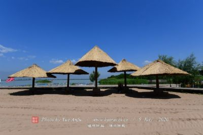
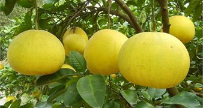
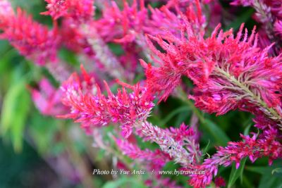

长寿区
现有古代遗址18处，古墓葬66处，古建筑
85处，石刻及石佛寺27处，近现代重要史迹及
代表性建筑6处，旅游点30余处，其中著名的
有：西南地区最大的人工湖长寿湖风景区，千
古一帝秦始皇为表彰巴寡妇清为国采矿炼丹之
功业而修建的“女怀清台”，历代兵家必争之地
汉代长江北岸赤甲山古战场，唐初永安县治地
阳关城遗址，宋代佛教建筑东林寺古刹；极具
开发价值的自然风景区有：古树参天、竹荫如
海的黄草山，茶梯摩云、溶洞如宫、峰奇石秀
、水净天清的明月山，寿星迭出、文化深厚的
罗围山
|
|  |
长寿湖位于长寿区东部，距重庆市区128千米，为50年代拦截龙溪河而成的人工湖，因地处长寿区境内而得名。长寿湖坝长1014米，高51米，顶宽8米，湖水面积6000公顷。一般水深15米，最深处50米。湖内港汊纵横交错，有岛屿200多个，是重庆市最大的湖泊旅游风景区。 长寿湖湖面辽阔，碧波万顷，水中倒影若画，气势极为壮观；若临暮春三秋，浅云遮日，烟波浩渺，水天一色，另是一番情趣。湖中岛屿林木青翠，建有多处园林景点。浴滨岛是长寿湖 |
|  |
重庆十里柚乡生态旅游区位于龙溪河畔的邻封镇魏家河坎，山清水秀，是中华名果——长寿沙田柚的主要产地，又名名“东林柚香”，目前已发展成为面积3万多亩的沙田柚园区，是当地农民增收致富的一大支柱产业。沿沙田柚林的人行便道循梯而上山顶，是千年古刹(庙)东林寺。沙田柚、龙溪河、东林寺被称“邻封三宝” |
|  |
西岩观西岩观位于重庆市长寿区城南望江路，背靠凤城，面向长江，为昔日长寿八景之一。因原有西岩观古庙而得名，现尚存较完整的建于明代天顺年间的城门和一段古城墙，1988年列为县级文物保护单位。景点主要有明代城门、西岩瀑布、森林公园、长寿缆车。八十年代中期在城门上建有一古雅亭台。 位于城区望江路，以瀑布闻名。景点包括西岩瀑布、明代城门、森林公园。 瀑布分三级，水源由滩子岩上喷射而出，宽约20米，头级高约40米、二级30米，三级20米。大雨之后，气势尤为滂湃，高者如白练高悬，矮者似长袖曼舞，故有“西岩瀑布千条线”这诗句 |
|